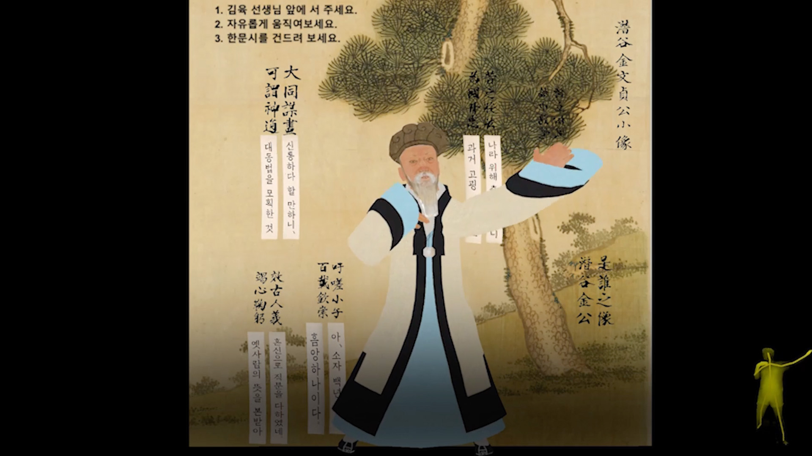
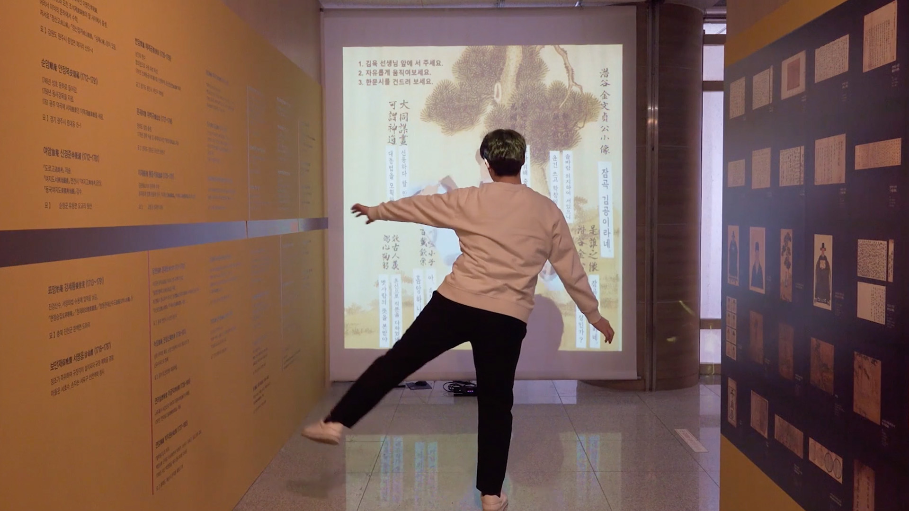
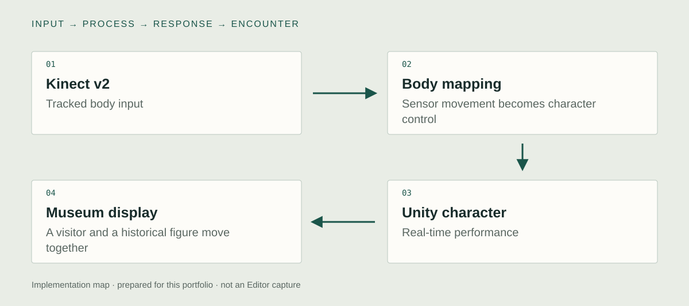

What I built in Unity / existing implementation
Map a tracked body onto a historical character.
I connected Kinect v2 body tracking to a Unity character interaction. The digital Kim Yuk follows the visitor's movement, bringing live body input and character animation into a museum presentation.
01 / Kinect v2 · Unity body input
Bring Kinect v2 movement into Unity
I connected Kinect v2 body tracking to the Unity installation. This is the Kinect v2 work, separate from the Azure Kinect integration in To Eternity. The input represents a visitor's movement that can be connected to a character in the museum presentation.
Unity view to capture
- Show
- The Kinect v2 input component and its tracked-body output.
- Demonstrate
- Show a visitor moving alongside the tracking view and Unity output.

02 / Body mapping · character transform and animation
Map a living body onto Kim Yuk
I connected the tracked visitor to the digital Kim Yuk character. The technical task is the mapping between the sensor's movement data and the figure's performance. Its purpose is immediate recognizability: a visitor should be able to connect their own action to the character's response.
Unity view to capture
- Show
- The actual body-to-character mapping component, rig, and affected transforms.
- Demonstrate
- Perform a slow arm movement and a change in body position so the correspondence is easy to follow.
03 / Unity scene · historical character · display
Present the mapping as an encounter
I integrated the interaction into a museum-facing presentation. The digital scholar becomes someone the visitor can move with, rather than a static model. The character's framing and the physical tracking area are part of how the interaction is understood.
Unity view to capture
- Show
- The character in its presentation scene and the visitor's usable tracking area.
- Demonstrate
- Record the installed view and the implemented behavior when the visitor leaves the area.

Technical structure & design decisions
How the parts connect.

- 01Kinect v2
Tracked body input
- 02Body mapping
Sensor movement becomes character control
- 03Unity character
Real-time performance
- 04Museum display
A visitor and a historical figure move together
A body-to-character mapping
The implemented relation is between a tracked person and a real-time character. Sensor coordinates and the animated figure belong to different spaces and must be connected through an explicit mapping.
Legibility at human scale
A visitor needs to recognize the relationship between their action and the character's response. The encounter's success depends on that correspondence, not only on the character's visual quality.
The conceptual starting point
Can moving with a historical character offer a different encounter from reading about one?
The work introduces the Silhak scholar Kim Yuk through bodily play. The visitor's movement becomes a bridge between the present-day body and the historical figure on screen. Educational material sits within that encounter rather than remaining entirely separate from it.
Pre-production & development logic
From intent to interaction.
A retrospective design note based on the documented work. Newly prepared for this portfolio.
- 01
Begin with a shared action
Frame movement as the way a visitor approaches the historical figure.
- 02
Design the correspondence
Decide which aspects of the body the character should follow and how the movement reads on the display.
- 03
Test the encounter
Rehearse entering the sensing area, moving, pausing, and leaving from the visitor's actual position.
A possible research extension
Proposed comparison
How does movement correspondence affect engagement with a historical digital character?
The mapping between the visitor's pose and the character's movement.
Character identity, scene, task duration, and educational material.
This is a proposed study direction motivated by the artwork. No controlled study or measured effect is reported for this comparison.
Evidence & implementation scope
What can be inspected.
Kinect v2 is confirmed by the artist. This case is distinct from the Azure Kinect implementation in To Eternity.
Technical captures to add
- Record Kinect v2 tracking and the corresponding Unity character movement side by side.
- Show the actual body-to-character mapping component and how the application behaves when a person enters or leaves the tracked area.
Existing project images, illustrative references, and new source examples are labeled separately. Original source, a current executable, and measured performance remain separate evidence items.